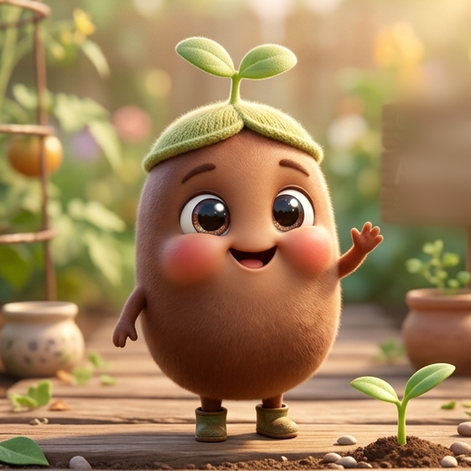

Let.growww
mari bertumbuh bersama
Perhatian
Informasi yang kami sajikan adalah berdasarkan data. Untuk menghindari ketidak akuratan informasi, mohon dipastikan terlebih dahulu agar data sesuai dan tervalidasi.
Terima Kasih